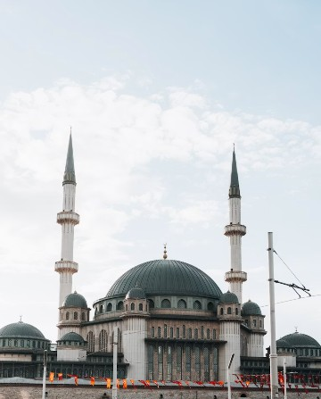
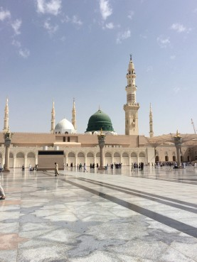

This iconic place is Al-Masjid an-Nabawi (The Prophet's Mosque), the second holiest site in Islam.
City: Medina
Country:
The most prominent feature in the center.
Beneath it lies the Sacred Chamber, which contains the tomb of the Prophet Muhammad ﷺ and his two companions, Abu Bakr and Umar (may Allah be pleased with them). The White Dome:
Located next to the Green Dome, reflecting the rich architectural evolution and historical expansions of the mosque. The Minarets:
Tall, elegantly designed Islamic towers topped with golden crescents.
The Courtyard & Umbrellas: A vast, marble-paved outdoor plaza equipped with large, automated umbrellas designed to shade worshipers from the heat.
